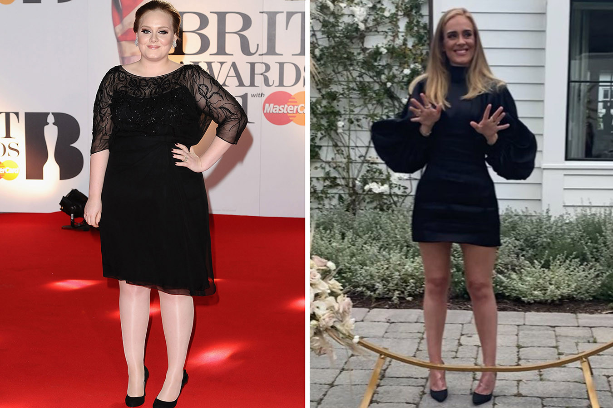
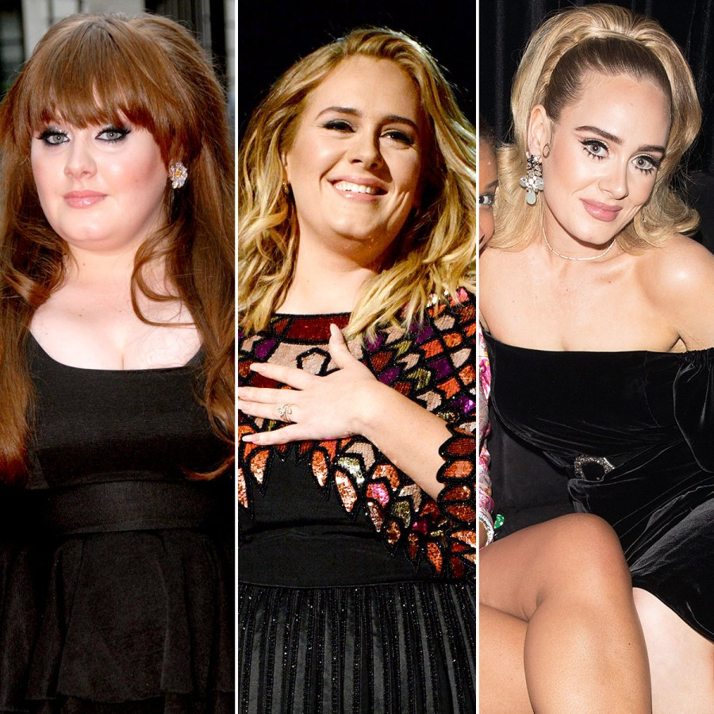

¡En 2019, Adele asombró a la sociedad al bajar 60 kilogramos! Ahora Adele continúa con el programa de adelgazamiento.
En primer lugar, después de tal pérdida de peso, la cantante no mencionó las verdaderas razones para perder peso, sino que solo habló sobre una dieta especial. Pero Adele le confesó a nuestro periodista y le contó la verdadera razón de su pérdida de peso. Este artículo cuenta la historia completa de Adele: cómo perdió peso, pero luego volvió a aumentar de peso, y cómo hoy vuelve a tener un peso y un cuerpo saludables.

La historia del exceso de peso
Debido al exceso de peso, hubo problemas con su carrera, los kilos de más le impidieron desarrollarse, las críticas se volvieron cada vez más negativas, ¡con consejos de “baja de peso o rindete”!
El punto de giro en la historia del exceso de peso fue el embarazo de la cantante. Mientras planeaba un embarazo, Adele enfrentó el problema de obesidad.
La situación empeoró con el embarazo. ¡Adele vestía talla 60 y pesaba 128 kg! Luego les dijo a los periodistas que tuvo problemas con el peso elevado cuando era adolescente, la molestaron y se consoló con la comida. Parecía una chica joven y alegre, pero por dentro tenía muchos complejos. Después del nacimiento del niño, necesitaba poner su cuerpo en forma.
Pasó todo su tiempo libre en el gimnasio haciendo ejercicio extenuante, consultó con un nutricionista y logró bajar de peso. Con gran dificultad y dolor, alcanzó peso que tenía antes del embarazo.
El problema regresó
Los terapeutas confirman que el exceso de peso nunca desaparece para siempre y en el 75% de los casos vuelve cuando las personas pierden la motivación. Pasó con Adele. Durante varios años, no solo ganó todos los kilos perdidos, ¡sino que también aumentó 13 kilos más!
Los fans estaban muy decepcionados con la apariencia de su ídolo y las críticas sobre ella se tornaron muy negativas. La audiencia quería que ella se retirara o regresara a un estilo de vida saludable. Las ventas de sus álbumes cayeron cuando Adele dejó de ocultar sus problemas de sobrepeso.
A un paso de la muerte
En 2018, a Adele le diagnosticaron obesidad de primer grado con alto riesgo de enfermedad cardiovascular.
Al principio, Adele pasó hambre, luego volvió a comer y se odió a sí misma.
Las cargas pesadas y el ejercicio intenso no la beneficiaron y no dieron ningún resultado. Adele necesitaba un método poderoso para perder peso.
Adele recurrió a un cirujano plástico, el mejor especialista en su campo en ese momento en busca de una lipoescultura. Decidió operarse, pero después de todas las pruebas, quedó claro que el riesgo de perder la vida era demasiado grande.
En cambio, el cirujano le prescribió las cápsulas Fortunella, que era en aquel entonces una novedad en el mercado peruano entre los fármacos para curar la obesidad sin operarse.
741
Los primeros resultados aparecieron en la primera semana del uso. ¡La figura empezó a cambiar! Fortunella El metabolismo de Adele se aceleró muy rápidamente y comenzó a quemar grasa. ¡Los primeros resultados asombraron a los fans! ¡Muchos estaban interesados en cómo logró perder peso!
cápsulas Fortunella para perder peso. Ayudan a perder peso exceso en corto plazo sin contraindicaciones ni riesgos para el cuerpo. No es un medicamento. Es un complemento alimentario biológico.
las cápsulas Fortunella para perder peso es un producto potente que quema grasas y garantiza:
- eliminar los depósitos de grasas.
- normalizar el metabolismo.
- normalizar el apetito.
- reitrar el colesterol «malo» y los radicales libres del cuerpo.
- eliminar hinchazones y prevenirlos.
- acelerar la digestión.
- hacer la piel elástica al renovar las células.
- prevenir los nuevos depósitos de grasas.
No es obligatorio tomárselo siempre, basta hacer un curso ¡para obtener el peso ideal para siempre!

Se puede pedir el fármaco solo en el sitio oficial ¡para evitar los falsos y garantizar el efecto!